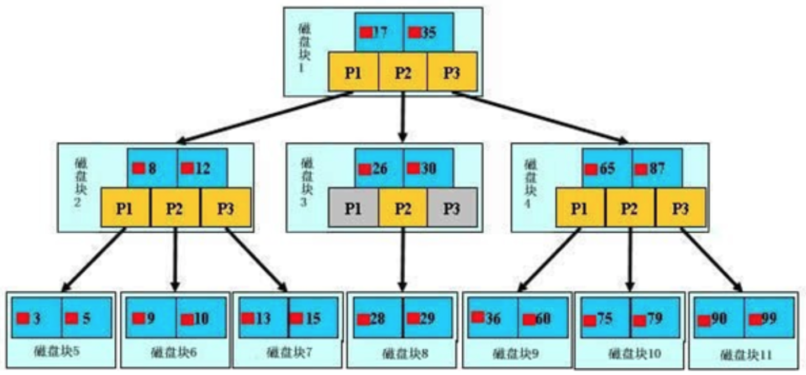
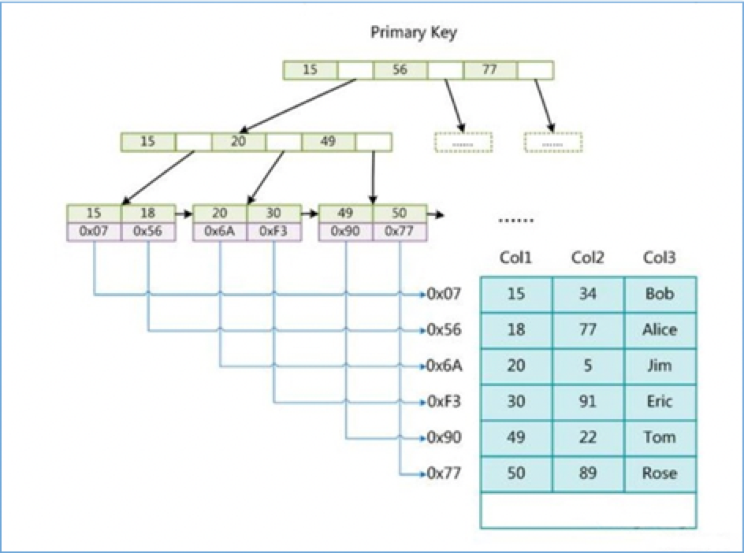
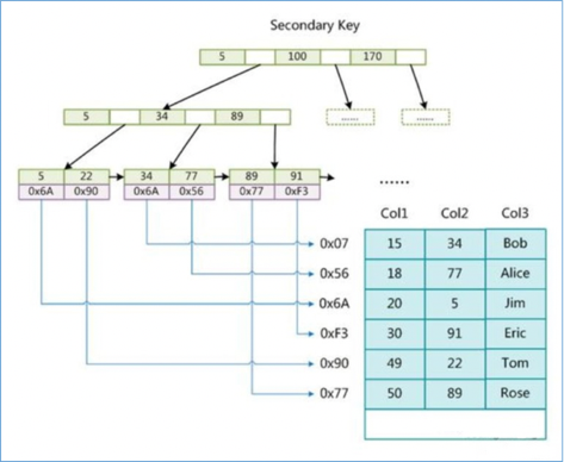
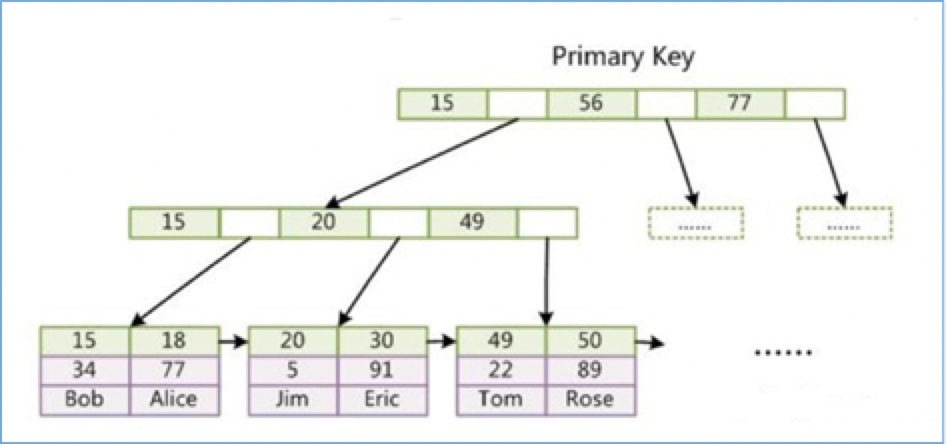

MySQL索引
索引介绍
索引是什么
官⽅方介绍索引是帮助MySQL高效获取数据的数据结构。更更通俗的说，数据库索引好⽐是⼀本书前面的目录，能加快数据库的查询速度。
- ⽅便查找 ---检索
- 索引查询内容 ---覆盖索引
- 排序
一般来说索引本身也很大，不可能全部存储在内存中，因此索引往往是存储在磁盘上的文件中的（可能存储在单独的索引⽂件中-MyISAM，也可能和数据⼀起存储在数据⽂件中-InnoDB主键索引）。 我们通常所说的索引，包括聚集索引、覆盖索引、组合索引、前缀索引、唯⼀索引等，没有特别说明，默认都是使用B+树结构组织（多路搜索树，并不一定是二叉的）的索引。
索引的优势和劣势
优势:
- 可以提高数据检索的效率，降低数据库的IO成本，类似于书的⽬录。 -- 检索
- 通过索引列对数据进⾏排序，降低数据排序的成本，降低了CPU的消耗。 --排序
- 被索引的列会⾃动进行排序，包括【单列索引】和【组合索引】，只是组合索引的排序要复杂⼀些。
- 如果按照索引列的顺序进行排序，对应order by语句来说，效率就会提⾼很多。
- where索引列在存储引擎层处理
- 覆盖索引，不需要回表查询
劣势：
- 索引要占用磁盘空间
- 索引虽然会提高查询效率，但是会降低更新表的效率。比如每次对表进行delete、update、insert操作时，MySQL不仅要保存数据，还要保存或者更新对应的索引文件
索引分类
单列索引
- 普通索引：MySQL中基本索引类型，没有什么限制，允许在定义索引的列中插⼊重复值和空值， 纯粹为了查询数据更快一点。 add index
- 唯一索引：索引列中的值必须是唯一的，但是允许为空值. add unique index
- 主键索引：是⼀种特殊的唯一索引，不允许有空值。 pk
组合索引
- 在表中的多个字段组合上创建的索引 add index(col1,col2..)
- 组合索引的使用，需要遵循最左前缀原则（最左匹配原则）
- 一般情况下，建议使⽤组合索引代替单列索引（主键索引除外）
全⽂文索引
- 只有在MyISAM引擎、InnoDB（5.6以后）上才能使用，⽽且只能在CHAR、VARCHAR、TEXT类型字段上使⽤用全⽂索引。 fulltext
- 优先级最⾼，先执行，不会执⾏其他索引
- 存储引擎决定执⾏哪一个索引
空间索引
一般不使用
索引的存储结构
存储结构
索引是在存储引擎中实现的，也就是说不同的存储引擎，会使用不同的索引。MyISAM和InnoDB存储引擎只支持B+TREE索引， 也就是说默认使⽤BTREE，不能够更换。MEMORY/HEAP存储引擎⽀持HASH和BTREE索引。
B-Tree和B+Tree
数据结构示例网站：https://www.cs.usfca.edu/~galles/visualization/Algorithms.html
B-Tree
B树是为了磁盘或其它存储设备而设计的⼀种多叉平衡查找树。

- B树的高度一般都是在2-4，树的⾼度直接影响IO读写的次数。
- 如果是三层树结构，支撑的数据可以达到20G；如果是四层树结构，支撑的数据可以达到几十T。
B-Tree和B+Tree的区别
B树和B+树的最大区别在于非叶子节点是否存储数据。
B树非叶子节点和叶子节点都会存储数据
B+树只有叶子节点才会存储数据，而且存储的数据都在一行上，而且这些数据都是有指针指向的，也就是有顺序的。
非聚集索引（MyISAM）
- B+Tree叶子节点只会存储数据行的指针（指向数据文件），数据和索引不存在一个文件，就是非聚集索引。在MyISAM中索引存储在
.myi中，数据存储在.myd中 - 非聚集索引中主键锁和辅助索引都会存储指针的值
非聚集索引-主键索引
假设表：create table t1 (col1 int pk, col2 int ,col3 varchar(100)); col1是主键。
 可以看出MyISAM的索引文件中仅仅保存数据记录的地址。
非聚集索引-辅助索引
在MyISAM中，主索引和辅助索引（Secondary key）在结构上没有任何区别，只是主索引要求key是唯一的，二辅助索引的key是可以重复的。如果再Col2上建立一个辅助索引，则索引结构如下图：  同样也是一个颗B+Tree，data中保存数据记录的地址。因此，MyISAM中索引检索的算法为首先按照B+Tree搜索算法搜索索引，如果指定的key存在，则取出其data域的值，然后以data域的值为地址，读取相应数据记录。
聚集索引
- 主键索引（聚集索引）的叶⼦节点会存储数据⾏，也就是说数据和索引是在一起，这就是聚集索引，在InnoDB中存储在
.idb文件中 - 辅助索引只会存储主键值，如果没有主键，则使⽤唯一索引建立聚集索引；如果没有唯一索引，MySQL自动创建一个隐藏主键，创建聚集索引
聚集索引-主键索引
InnoDB要求表必须有主键（MyISAM可以没有），如果没有显式指定，则MySQL系统会⾃动选择一个可以唯一标识数据记录的列作为主键，如果不存在这种列，则MySQL自动为InnoDB表⽣成一个隐含字段作为主键，类型为长整形。
InnoDB主索引（同时也是数据⽂文件）的示意图如下，可以看到叶节点包含了完整的数据记录。这种索引叫做聚集索引。因为InnoDB的数据文件本身要按主键聚集。

聚集索引-辅助索引（次要索引）
InnoDB的辅助索引data域存储相应记录主键的值而不是地址。换句话说，InnoDB的所有辅助索引都引用主键作为data域。
聚集索引这种实现方式使得按主键的搜索⼗分高效，但是辅助索引搜索需要检索两遍索引：⾸先检索辅助索引获得主键，然后用主键到主索引中检索获得记录。
select * from user where name='Alice'需要回表查询，即检索两次：⾮主键索引 -> pk -> 索引 -> 数据
select id,name from user where name='Alice'不需要回表查询，因为在辅助索引树上就可以查询到了所有需要的数据，这也叫覆盖索引 (多⽤组合索引的好处)
为什么不建议使用过长的字段作为主键？ 因为所有辅助索引都引用主索引，过长的主索引会令辅助索引变得过大。
索引使用
哪些情况需要创建索引
1、主键自动建立唯一索引
2、频繁作为查询条件的字段应该创建索引
3、多表关联查询中，关联字段应该创建索引 on 两边都要创建索引
4、查询中排序的字段，应该创建索引
5、频繁查找字段，覆盖索引
6、查询中统计或者分组字段，应该创建索引 group by
哪些情况不需要创建索引
1、表记录太少
2、离散度不高的字段不创建索引
3、经常进行增删改操作的表
4、频繁更新的字段
5、where条件里面使用不高的字段
为什么要使用组合索引
MySQL创建组合索引（如，name,cid）的规则是首先会对组合索引的最左边的，也就是第一个name字段的数据进行排序，在第一个字段的排序基础上，然后再对后面第二个cid字段进⾏排序。就相当于实现了类似order by name cid这样一种排序规则。
为了节省mysql索引存储空间以及提升搜索性能，可建立组合索引（能使⽤组合索引就不使用单列索引）
例如:
创建组合索引（相当于建⽴了col1、col1 col2、col1 col2 col3三个索引）：
ALTER TABLE 'table_name' ADD INDEX index_name('col1','col2','col3');
比一颗索引树上创建3个索引，省空间且更容易实现覆盖索引。
使⽤遵循最左前缀原则
1、前缀索引 like a%
2、从左向右匹配直到遇到范围查询 > < between like ，如：建⽴立组合索引 (a,b,c,d)，where a=1 and b=1 and c>3 and d=1 到c>3就停⽌了。所以d用不到索引，怎么办？可以把索引改成 (a,b,d,c)。
索引失效
疑问
1、数据库大字段Oracle和MySQL分表是如何存储的？